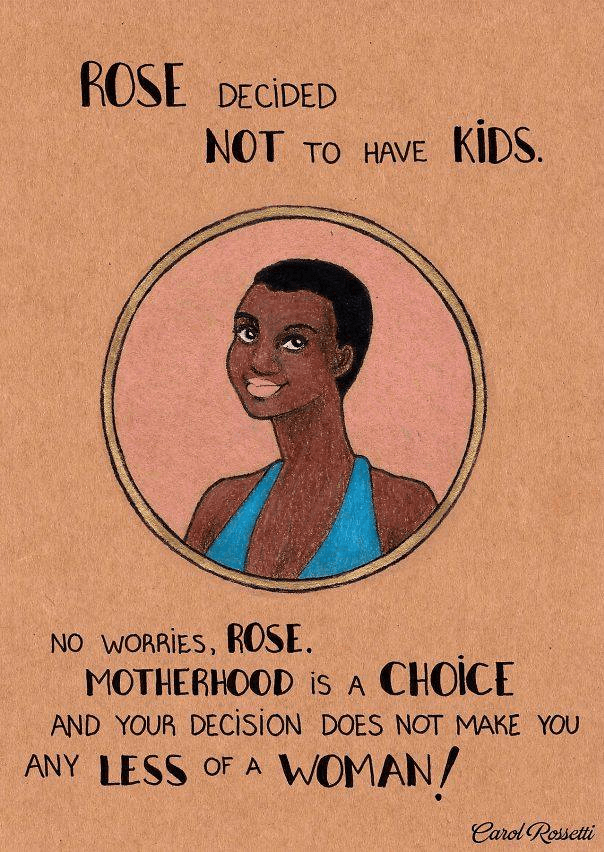

Thomas Hobbes is an Australian uni student hiding out in his mother's basement waiting for the singularity to arrive. As a backup plan he is secretly hoping to avoid the perils of an actual career by becoming a writer and travelling the world.


Following the recent attacks in Paris, immigration and multiculturalism are again in the spotlight. This is a good thing, but the discourse is as shallow as ever. We now hear arguments over what the greatest national security threat is to the West. Is it terrorism? Is it climate change? Both of these are genuine issues, but I’d give a completely different answer – demographic decline.
Many others have covered this topic, but lets explore further.
Every developed western country – bar one – has a fertility rate well below the replacement rate of about 2.1 children per woman. This problem is often underrated, but it poses serious threats to our culture, our institutions, and our way of life. Questions of a shortage of labor or cultural decline are one thing, but there’s a huge political element as well.
It is an easily found but rarely mentioned fact that, the further left on the political spectrum you are, the less likely you are to have kids. In raw figures, conservative women will have on average 41% more children than their liberal counterparts.

It is also true that political preferences are strongly correlated with parental views, being the dominant factor around 70% of the time.
The short of it is that, assuming the number of conservatives and liberals is about even, within two or three generations the descendants of today’s conservatives would outnumber their liberal counterparts 2:1.
The only way the left can make up for this demographic shortfall, as they are acutely aware, is to support increasingly generous immigration policies. This allows them to replace the millions of liberal babies that are never born with immigrants imported straight from the third world.
This poses an obvious question. Nearly all of them come from more conservative countries compared to the west. Polls overwhelmingly show that few Muslims are tolerant of homosexuality, abortion or sex outside marriage for instance. So how does the left guarantee their loyalty?
The key factor here is that the vast majority of these immigrants are poor. 90% of blacks and 70% of Hispanics don’t vote for the Democrats because they’ve been brushing up on their Karl Marx (the 90% figure also predates Obama).
Left-leaning parties, from the Democrats in the US to the labor parties in the rest of the Anglosphere to the social democrats of Europe, are able to buy them out with generous handouts on the taxpayer dime. Along with the collapse of the family unit, this is one of the major contributing factors to the West’s deteriorating financial situation.
Eventually however, we know the welfare spigot that keeps these votes flowing to the left is going to run dry. Trilion dollar deficits aren’t sustainable forever. What happens then? Where will their loyalties lie?
The breakdown of this uneasy alliance is going to be one of the defining political issues of our generation. Make no mistake, immigrant communities will turn on the left, as surely as the Allies turned on each other at the end of World War Two. Liberals will be typically bewildered by this—but weren’t we so nice to them?
As their voter base collapses between conservative whites on the one hand and conservative immigrants on the other, I would like to pose a serious question: how on earth will the left preserve their liberal agenda?
What happens to fifty years of no-fault divorce, welfare programs, domestic violence campaigns, free contraception, gay rights, legalized drugs, prostitution, nightclub culture, topfreedom and so on?
And not all of these things are fundamentally bad of course. The fact that women can walk around in miniskirts unmolested, that someone can legally flee their abusive spouse, that gays aren’t being publicly stoned—some of these things are rather nice, lets admit that.
The problem here is they may not be sustainable. They’re the social equivalents of the welfare state.
The theory is really quite simple.
Society A takes the progressive route. Full of moral indignation, they let women out of the kitchen and dismantle the family unit. The birth rate promptly collapses.
Society B sticks to more traditional, if harsher, social policies, and manages to maintain a stable population.
At the end of the day, which one remains standing? Which one endures?
The average fertility rate in richer countries has been below two children per woman for decades now. The average American woman, not including ethnic minorities, has 1.8 kids. In Europe this figure is 1.5 and in Japan 1.4.
South Korea is one of the worst examples at 1.3 children per women. In 1980 it had 5.7 million elementary school students, today there are just three million. Korea is expected to go from 50 million people today to as low as 34 million by 2060 – and half of them will be over 60.
Perhaps most startling is how this contrasts with their northern neighbors. The North Koreans (famine and all) are bang on the replacement rate.
In other words, according to current trends – North Korea is going to win in the end.
This shows you the truly awesome destructive effects of cultural Marxism. It can take a country transformed so radically from a third world backwater into an economic powerhouse and run it back into the ground barely a generation later.
Deeper questions can be asked about the limits of tolerance. Can such wildly different ethnic groups really just get along? Fast forward to 2050, when today’s ethnic minorities in Europe, North America and Australia might make up closer to 50% of the population. Is this not a recipe for violence?
The threat of terrorism is often exaggerated. The Paris attacks killed 130 people, but even France already averages 600+ murders per year. Its still less than a month’s worth of traffic accidents.
But Muslims are currently less than 10% of the French population. What it it were 30% or 40%? That’s no longer a recipe for mere sporadic violence. Its a possible prelude to civil war.
Previously this may have sounded far-fetched, but it sounds a lot less ridiculous in 2015 then even five years ago. We’re in the era of ISIS, an organisation whose ranks include as many as 30,000 foreign fighters, including some 5,000 westerners.
We’re also seeing something of a nationalist revival on the right, as the four million Britons who recently voted for UKIP shows. Donald Trump wouldn’t have been taken seriously in 2008 or 2012, but now hits a chord with millions of Americans.
Ethnic tensions perhaps haven’t been this high in the West since the days of the Second World War. I believe we’re now entering an era of growing clashes between nationalists on the right and immigrant communities and their sympathizers on the left. The outcome is unclear. Like the spread of Communism last century, some countries will fall like dominoes. In others the struggle will be more protracted.
Most people, even the most vocal critics of left-wing social policies, seem blissfully unaware of the demographic and political time bombs they are slowly nesting.
To them I say this: it is all very well and good to declare yourself a “strong independent woman”™ who doesn’t need a man, but if you fail to have children and instill those same values in them, then your politics will be as much an evolutionary dead end as you are.
Unless you happen to do something that breaks new scientific ground, like curing cancer or inventing a warp drive, your spawn and the values you raise them with are the only real legacy you leave. It simply doesn’t matter how right you were in your moral leanings.
It doesn’t matter which party you voted for when you were alive, or how many leaflets for an anti-racism rally you handed out at the local train station. It doesn’t matter how high you held up that “My body! My decision!” sign at the pro baby killing women’s choice rally.
What matters is that, if you fail to procreate, the DNA patterns that irrevocably make up you will cease to exist the moment your corpse decomposes.
Meanwhile that asshole neighbor of yours who voted for Romney is raising three or four more little Republicans as you sit there stroking your cats, and the Muslim family down the street is pumping out another Mohammad or Fatima every other year on the taxpayer dime.
The future belongs to those who worked hard to create a stable family situation in which they could raise their spawn, while you were busy trying to overthrow the patriarchy without any thought as to what followed. As far as the world is concerned, you sucked in oxygen for a few decades, then vanished without a trace.
I’m trying to plead here, quite sincerely, about this fundamental threat to the society we’ve created. It is something that will affect its more progressive elements in particular.
But like a drug addict who just can’t quit, you refuse to acknowledge your self-destructive actions. You either ignore, or somehow celebrate, as the west’s liberal youth becomes increasingly sexually impoverished and retreats into internet pornography and spinsterhood.
As some have also pointed out, if the west is taken over by Islam, all I’d have to do is grow a beard and get up early for morning prayers. Women would be marched straight back to the kitchen. You have the most to lose, so please just listen for a moment.
Maybe all of us dream of creating a more “moral” society. Maybe someday it will be truly possible, but the current experiment appears to be failing, and the society it has created has become rotten to the core. If in another fifty or a hundred years, that society simply doesn’t exist anymore, then those cultures who have chosen a more traditional mold will expand to fill the gap.
This has serious consequences not only for liberalism, but for democracy as a concept. If industrialized democracies inevitably end up suffering a demographic decline, then who does the future below to? Basic maths would seem to make the outcome inevitable.
The side that wants to win must start having more kids. Or lose.
Read More: If Black Lives Matter, Blacks Need To Stop Killing Each Other
{kind=link}
{kind=link}
{kind=link}
{kind=link}